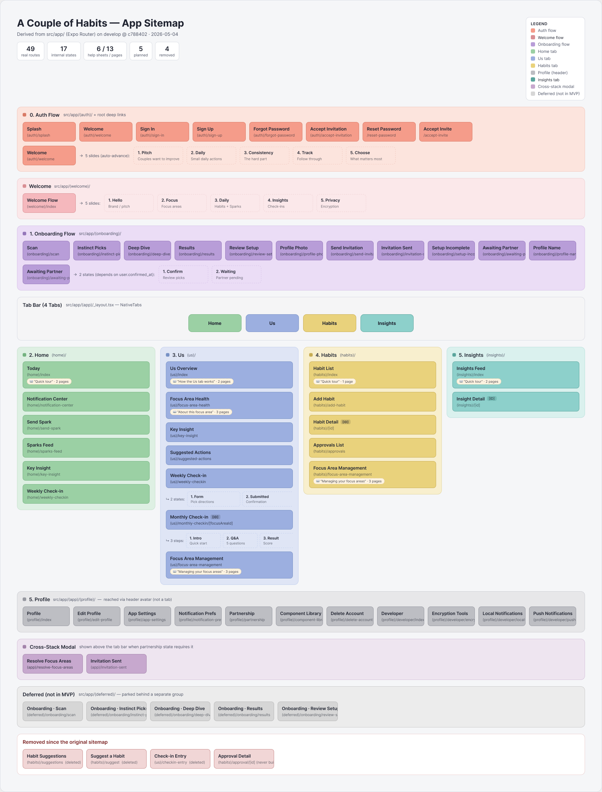
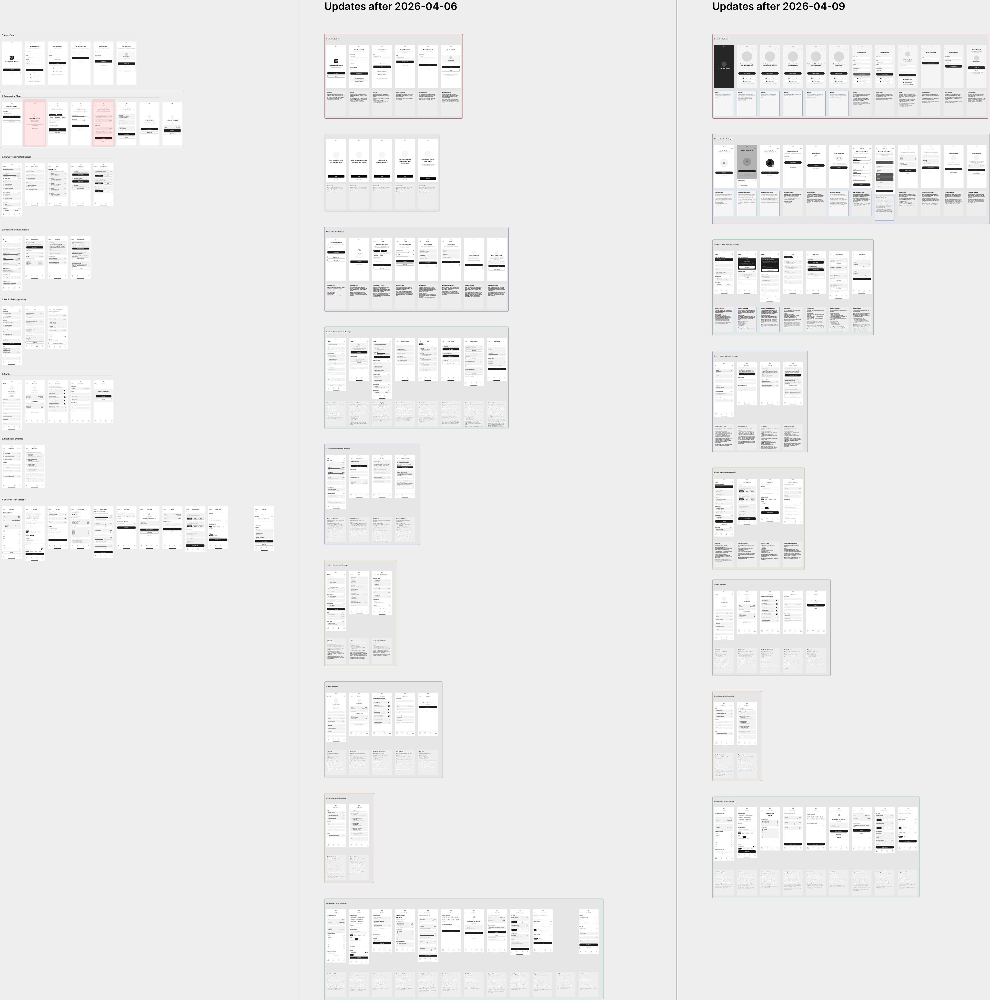
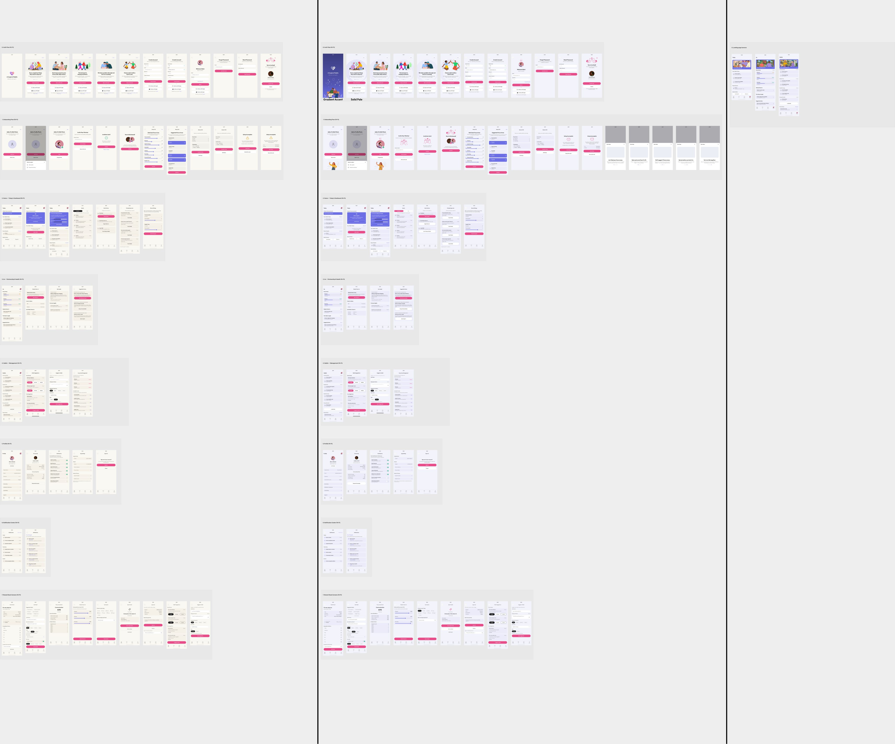
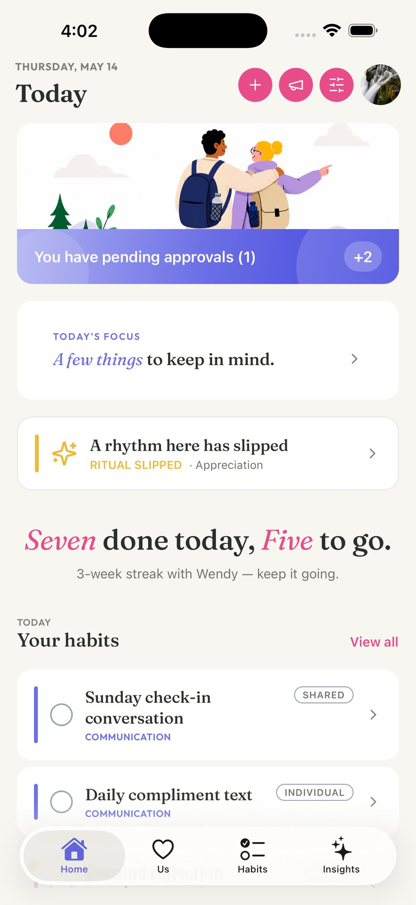
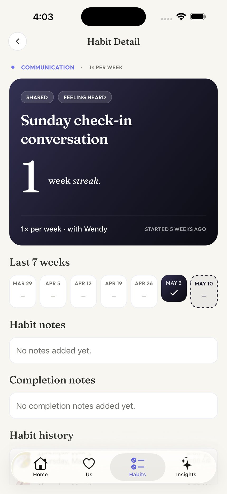
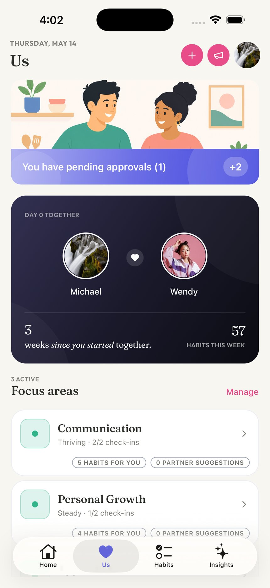
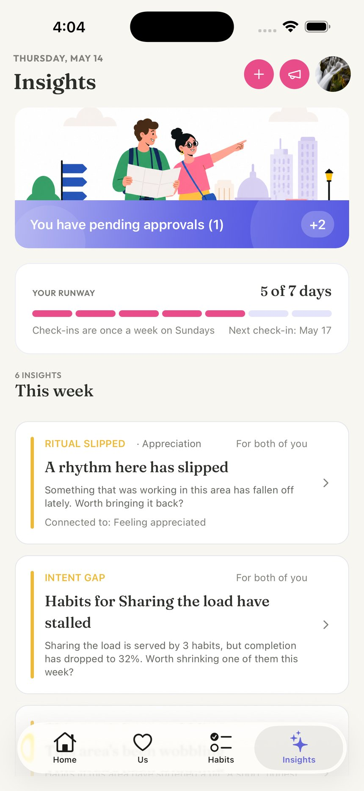
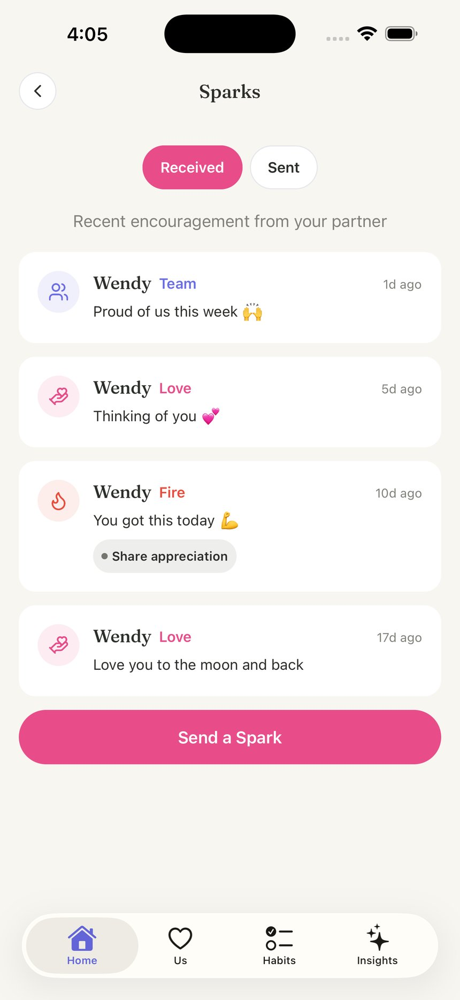
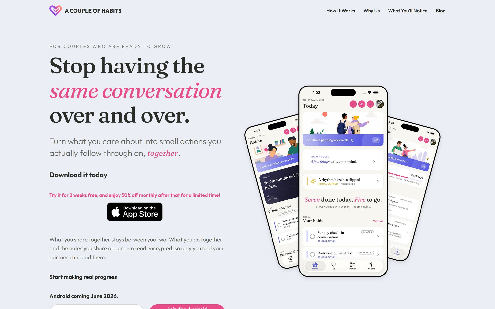

A Couple of Habits
A habit tracker built for two people — shared habits, weekly check-ins, partner approvals, and end-to-end encrypted notes. Live on the App Store today, with Android landing June 2026.
My role: Product designer on a three-person team (product owner, developer, designer). I owned the design end-to-end: information architecture, wireframes, the high-fidelity design system, marketing site design, and the ad campaign creative.
Architecture
Before any screens, the product was mapped as a single sitemap: 49 routes across auth, onboarding, four main tabs, and the partner-pairing flows that make a two-person app tricky — color-coded by flow, with deferred and removed scope tracked right on the artifact. The map is kept honest against the shipped codebase, so design and engineering share one picture of the product.

Wireframes
Forty-plus grayscale wireframes established layout, hierarchy, and flow gating before any visual design. Working lo-fi kept review cycles with the product owner fast — whole sections were rearranged in dated update passes without a pixel of styling at stake.

High-fidelity design
The wireframes were cloned and restyled into a 55-screen high-fidelity set in the app's "Editorial Mix" language: warm cream surfaces, lavender and pink accents, Outfit for the interface with Fraunces for editorial moments, and a custom illustration style shared across the app and marketing.

The shipped app
Five surfaces from the live product, captured from a seeded two-partner demo.





Marketing site
The live site at acoupleofhabits.com carries the same editorial language as the app — Fraunces headlines, cream-and-pink palette, and fanned device screenshots composed in Figma. Designed and shipped as part of the same system, not a separate brand.

Ad campaign
Seven ad formats built as data-driven Remotion (React) components, so each format renders against any message hook — a 40-video matrix across 5 hooks in story and feed aspect ratios. Four formats shown here.
From the first sitemap to App Store launch, one design system carried the product, the marketing site, and the ad campaign — built by a three-person team.